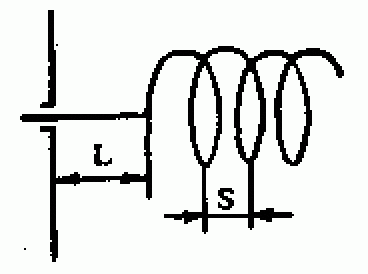
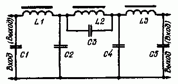
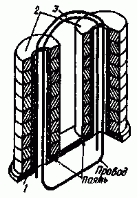

ШИРОКОПОЛОСНАЯ СПИРАЛЬНАЯ АНТЕННА
Во многих крупных городах получило широкое развитие коммерческое телевидение. Причем передачи ведутся как в привычном метровом диапазоне, так и в дециметровом. Возникает необходимость использования или двух различных антенн, или одной широкополосной. 
В связи с этим хочу предложить описание простой эффективной телевизионной антенны. Предлагаемая цилиндрическая спиральная антенна прекрасно принимает у меня в г.Махачкале 5 программ: 3 — на MB и 2 — на ДМВ. Размеры были рассчитаны на дециметровый диапазон (700МГц). Антенна показала визуально лучшее качество, чем 4-х элементный квадрат, особенно если учесть, что она принимает все транслируемые программы в обоих диапазонах. При этом уменьшились помехи, обусловленные отражением от окружающих зданий.
Формулы для расчетов:
1. Шаг спирали S=0,24L, L[см]=30000/f[МГц];
2. Размер витка D=0,31/L;
3. Длина витка l=корень((пD)2+S2);
4. Диаметр провода спирали (приблизительно) 0,01L;
5. Диаметр экрана 0,8NS, N — число витков;
6. Входное сопротивление Rвх=100 Ом;
7. Расстояние до экрана h=0,2L;
Коэффициент усиления приблизительно можно подсчитать по формуле:
Ку[дБ]=10lg(15(1/L)2NS/L).
Антенна была выполнена из алюминиевой проволоки диаметром 4мм. Чем больше диаметр провода, тем меньше входное сопротивление. Ку=12дБ при 4-х витках и 15дВ — при 7-и витках.
Экран был выполнен из листа алюминия.
-----------------------------------------------------------------------------------------------------------------
ПРОСТАЯ ШИРОКОПОЛОСНАЯ АНТЕННА

Вниманию читателей предлагается простая широкополосная антенна, ра ботающая в метровом диапазоне на 3...12 каналах и в дециметровом - на 24...41 каналах. У нас в городе веща ние на метровом диапазоне ведется с вертикальной, а на дециметровом - с горизонтальной поляризацией волн. Антенна состоит из двух вибраторов. Вибратор метрового диапазона согнут под углом 120°. Перед ним расположен вибратор дециметрового диапазона (рис.1). Развертка полотна антенны по казана на рис.2. Вибраторы сгибаются под углом 90° приятель к другу. Вид антен ны спереди показан на рис.3, общий вид - на рис.4. Антенна вертикальной по ляризации метрового и горизонтальной дециметрового диапазонов показана на рис.5,6. Полотно антенны изготавлива ется из любого материала (трубки, прут ка, проволоки, шины силового кабеля) диаметром 8...20 мм. Вибраторы антен ны можно-изготовить отдельно и соеди нить сваркой или винтами. Кабель сни жения подключается в точках А и В. Вариант крепления к мачте и допол нение антенны траверсой с директорами дециметрового диапазона показан на рис.6.

----------------------------------------------------------------------------------------------------------------------
Логопериодическая антенна
Логопериодическая антенна - широкополосная направленная антенна, работающая в десятикратном и более широком диапазоне волн. По коэффициенту усилении антенна эквивалентна трех-четырехэлементной антенне волновой канал. Может быть использована для приема сигналов многопрограммных телецентров при любых сочетаниях каналов метровых и дециметровых волн (каналы 1—41). Один из простых вариантов антенны показан на рис.1. Антенна состоит из ряда параллельных вибраторов, подключенных к двухпроводной линии с последовательной переполюсовкой точек питания вибраторов. Длины вибраторов и расстояния между ними убывают в геометрической прогрессии в направлении к точкам подключения фидера. Позади самого длинного вибратора устанавливают короткозамыкающую перемычку, улучшающую согласование антенны с фидером и обеспечивающую симметрирование.

Кабель пропускают внутри одной из трубок двухпроводной линии и припаивают со стороны самого короткого вибратора, как показано на рис.1.
Характеристики антенны зависят от знаменателя геометрической прогрессии т, характеризующего скорость убывания длин вибраторов и расстояний между ними, и угла ф при вершине треугольника, в который вписаны вибраторы. Чем ближе т к единице и чем меньше ф, тем больше коэффициент усиления антенны, однако при этом возрастают ее габариты и масса. На практике принимают обычно т =0,8—0,9 и ф=30—40°, что позволяет получить довольно рослый коэффициент усиления при относительно небольших габаритах и массе.
При выбранных т и ф размеры антенны можно определить графически исходя из Lmax и Lmin — максимальной и минимальной длин волн рабочей полосы частот. Сначала следует определить длину l1 первого (наибольшего) вибратора, которая должна составлять 0,55 Lmax, после чего начертить равнобедренный треугольник с основанием, равным длине первого вибратора в уменьшенном масштабе (например, 1 : 20 или 1 : 50), и выбранным углом ф при вершине. В дальнейшем все построения и расчеты следует исполнять с учетом этого же масштаба. Второй вибратор располагают на расстоянии d1 = (0,15—0,18) Lmax. Длина его l2 равна длине отрезка прямой, проведенной параллельно основанию на расстоянии ri,.

Третий вибратор располагают на расстоянии d2=d1т от второго, а длина его l3 равна длине отрезка прямой, проведенной на этом расстоянии от второго вибратора. Аналогично определяется длина четвертого вибратора, расположенного на расстоянии d3=d2т от третьего, и т. д. Последним является вибратор, длина которого будет меньше 0,45 Lmin.
На рис.2,а показаны размеры антенны на каналы 1—12, на рис.2,б — на каналы 1—5, на рис.2,в — на каналы 6—12. Пользуясь описанной методикой, можно рассчитать антенну на каналы 1—41, а также для иной требуемой полосы частот.
Коэффициент усиления антенны 6—7 дБ, уровень побочных лепестков—от —12 до —14 дБ, КБВ — более 0,5. Диаметр трубок двухпроводной линии 22 мм, расстояние между центрами 32 мм, диаметр вибраторов 12— 14 мм. Кабель снижения — с волновым сопротивлением 75 Ом. Справочник радиолюбителя-конструктора
Дополнение от Николая Большакова Лично мною было собрано несколько подобных антенн для дециметрового диапазона телевидения. В качестве материала были ипользованы отрезки медной проволоки диаметром 0,8 - 1,5 мм и две пластинки из одностороннего фольгированного стеклотекстолита. Вибраторы из проволоки припаиваются к пластинам. Конструкция получается очень простой и легко повторяемой. Размеры антенны для диапазона 400-850 МГц приведены на рисунке ниже. На пластинки размером 25х220 мм припаиваете вибраторы из проволоки (обе части совершенно одинаковые), нижняя половинка поворачивается на 180 градусов относительно оси. Обе пластины соединяете через втулки (5-10 мм) винтами через отверстия на концах пластин. Винты должны быть изолированы от фольги. Кабель расположен между пластинами.

Размеры антенны для диапазона 850-950 МГЦ (радиотелефоны)
Номер элемента Общая длина вибраторов, мм Расстояние от предыдущего элемента, мм Расстояние от конца бума, мм 5176044 41415195 311340135 29032168 17226194
Теоретически параметры:
Коэффициент усиления - 8,3 Дб,
Волновое сопротивление - 60 Ом.
-----------------------------------------------------------------------------------------------------------
ДВУХПОЛОСНАЯ АНТЕННА ДМВ
Модификации антенны. Для некоторого увеличения коэффициента усиления (при сужении полосы пропускания), а главное, повышения помехозащищенности антенны читатель Н. Туркин из С -Петербурга предлагает модифицировать вариант двухполосной антенны. Для этого рефлектор антенны он рекомендует сделать активным. В результате получится так называемая антенна типа "ZL", аналогичная по свойствам четырехэлементной антенне (см. книгу К. Рохтхаммеля "Антенны". - М Энергия, 1979). Главная особенность такой антенны - ослабление сигнала с обратного направления до 40 дБ.

Доработка антенны сводится к соединению верхних точек крепления полупетель вибратора и рефлектора двупроводной воздушной симметричной перекрещивающейся линии передачи (см. рисунок). Ее можно осуществить из проводов диаметром 3- 4 мм, расположиенных на расстоянии 1,5...2 мм один отдругого. Перемычку на шлейфе рефлектора опускают вниз до получения четвертьволновой симметричной короткозамкнутой линии. Расстояние между рефлектором и вибратором должно быть равно L/8, периметр вибратора-1,04L; рефлектора - на 5% больше (1,09L).
При активном рефлекторе входное сопротивление антенны снижается примерно до 30 Ом, поэтому соединительный кабель с волновым сопротивлением 75 Ом следует подключить через четвертьволновую несимметричную линию (трансформатор сопротивлений) в виде отрезка коаксиального кабеля с полиэтиленовой изоляцией с волновым сопротивлением 50 Ом длиной 0,66 L/4.
------------------------------------------------------------------------------------------------------------
Широкополосный усилитель мощности
Усилители мощности на полевых транзисторах имеют ряд преимуществ перед усилителями на биполярных транзисторах. В частности, в них более просто получить хорошую линейность амплитудно-частотной характеристики и высокую стабильность параметров [1].Описываемый усилитель (см. схему на рис. 1) обеспечивает выходную мощность приблизительно 70 Вт в нагрузке сопротивлением 75 Ом и усиление приблизительно 40 дБ в середине диапазона З... 30 МГц. АЧХ показана на рис. 2.
Предварительные каскады усиления собраны на полевых транзисторах VT1 и VT2. Первый из них работает с небольшим положительным напряжением смешения на затворе, задаваемым делителем R1R2. Нагрузкой транзистора VT1 является широкополосный трансформатор Т1. Его вторичная (понижающая) обмотка включена в цепь затвора транзистора VT2, работающего с нулевым напряжением смещения на затворе. Вторичная (понижающая) обмотка
широкополосного трансформатора ТЗ через резисторы R4 и R5 соединена с затворами транзисторов выходного каскада VT3 и VT4, которые также работают с нулевым напряжением смешения.

Puc.1

Puc.2
Повышающая обмотка выходного трансформатора ТЗ подключена к антенному фильтру. Последний необходим в связи с тем, что коэффициент гармоник усилителя не лучше -15 дБ. Схема антенного фильтра приведена на рис. 3. Можно использовать и антенный фильтр от широкополосного усилителя, описанного в [2].

Puc.3
Важными элементами усилителя являются широкополосные трансформаторы. Широкополосность трансформаторов пропорциональна отношению Lo/Ls, где Lo - индуктивность обмоток, Ls - индуктивность рассеяния. Следует учесть, что уменьшение Lo приводит к сужению полосы частот равномерного усиления снизу, а прирост Ls - сверху. Малые значения Ls можно получить при сильной связи между обмотками, что достигается специальной конструкцией трансформаторов [3, 4].
В усилителях, испытанных автором, применялись широкополосные трансформаторы, конструкция которых показана на рис. 4.

Puc.4
Трансформатор состоит из металлического каркаса 1, представляющего собой две медные трубки, соединенные медной перемычкой. На каждую трубку надевают по 9 колец 2 типоразмера К10Х6Х3 из феррита М1000НН. Кольца между собой склеивают клеем БФ-2. Через трубки пропускают два витка провода 3 МГТФ 0.65 так, чтобы его концы выходили со стороны перемычки. Провод должен туго вступать в трубку. Трубки с перемычкой являются понижающей обмоткой, а два витка провода - повышающей.
Источник питания должен обеспечивать напряжение 40 В при токе до 3 А.
Можно, например, использовать источник, описанный в статье В. Дроздова "Однодиапазонный телеграфный KB трансивер" ("Радио", 1983, N 1, с. 17-22).
В усилителе использованы резисторы МЛТ, конденсаторы КД, К52-5, проходные конденсаторы КТПС-1, ВЧ дроссели Д1.2-40, ДМЗ-12. Дроссели можно изготовить и самостоятельно на отрезках ферритовых (600НН) стержней длиной 15...20, диаметром 2 мм. Намотку ведут виток к витку проводом ПЭВ-2 0,31 до заполнения магиитопровода. Собственные резонансные частоты дросселей должны быть выше верхней частоты рабочего диапазона усилителя. Реле, контакты К 1.1 которого задействованы для менеджмента режимом усилителя, - герконовое РЭС-55 (паспорт РС4.569.601). Оно расположено в возбудителе.
Транзисторы VT2-VT4 желательно подобрать по начальному току стока. У транзистора VT2 он должен быть 30...40 мА, у VT3, VT4 - 80...120 мА (но желательно, чтобы тот самый параметр у обоих транзисторов был одинаков). Транзистор КП901Б можно заместить на КП901А.
В выходном каскаде можно использовать один транзистор КП904А, но при этом выходная мощность усилителя снизится до 40 Вт. Все транзисторы размещены на общем массивном теплоотводе площадью приблизительно 1000 см2, на котором закреплена монтажная плата из фольгированного гетинакса с вырезами под транзисторы. Монтаж выполнен навесным способом. Фольгированный слой используется в качестве общего провода. В местах установки монтажных стоек фольга удалена.
Данные конденсаторов и катушек фильтра приведены в таблице. Катушки намотаны на кольцевых (типоразмер К24Х13Х7) магнитопроводах из феррита М50ВЧ.
Номиналы конденсаторов (в пф) и катушек (в мкГн) фильтра
Диапазон, МГц
С1, С5
С2, С4
C3
L1, L3
L2
3.5
7
14
21
28
1220
610
270
180
150
2530
1260
540
380
320
1170
590
250
180
150
1.6
0,8
0.35
0,25
0.2
0,6
0,3
0.15
0,1
0.08
Правильно собранный усилитель начинает работать сразу. Подбирая резистор R2, устанавливают ток стока транзистора VT1 в пределах 110...140 мА. Если усиление на низкочастотных диапазонах велико, надобно включить резистор R3 с меньшим сопротивлением (100...560 Ом). В усилителе нет специальной защиты выходных транзисторов. Как показал опыт, он устойчиво работает с различными нагрузками - как с настроенными, так и с различными "случайными" антеннами, например, куском провода длиной 2,5 м. Короткое замыкание на выходе усилителя также не выводит из строя выходные транзисторы благодаря падению крутизны их характеристики при нагреве.